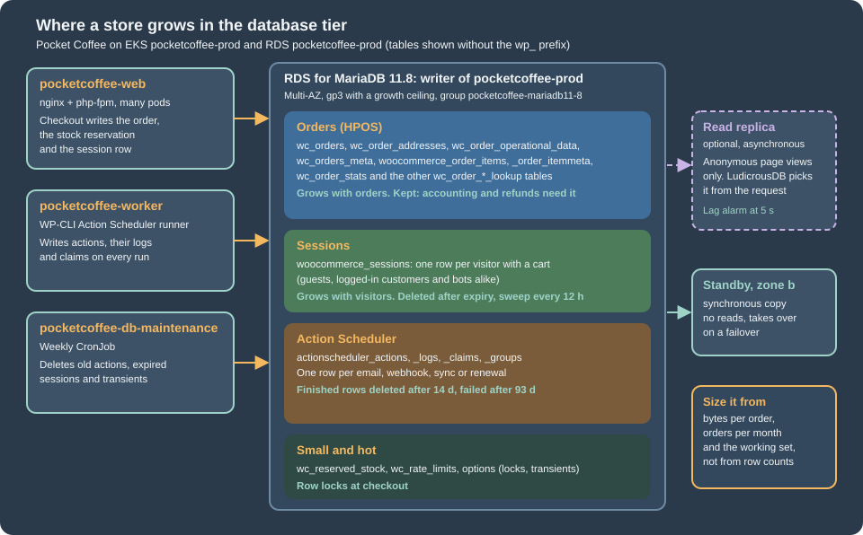

Cloud: Database, HPOS and Sessions
|
This content was generated with the assistance of AI and should be verified against the official documentation before being relied on in production. |
This page was written against WooCommerce 11.2.1 (2026-10-09) on WordPress 7.1.4 (the security release of 2026-10-28; the WordPress pages of this site use 7.1.3 as their baseline), PHP 8.4 for the container image, MariaDB 11.8 and MySQL 8.4 on Amazon RDS, Kubernetes 1.36 or 1.37 on Amazon EKS and Action Scheduler 4.1.0, which WooCommerce 11.2.1 bundles, and was checked on 2026-10-29. It names no prices: the cost drivers are listed so that you can price them yourself, and every size is a method or a starting point to measure, not a result.
It is the second of six pages on running a WooCommerce store on a cluster and assumes the
Cloud: Deployment Overview, which also defines the names used here:
the store Pocket Coffee (www.pocketcoffee.example) on the EKS cluster pocketcoffee-prod in eu-west-1, namespace
pocketcoffee, the Helm chart pocketcoffee-woocommerce (built the way the WordPress chart lumenpress-wordpress is, with
helpers pc.*, see Deploying on EKS with Helm), the RDS instance
pocketcoffee-prod with the database pocketcoffee and the users wc_app and wc_migrate. Creating the instance, choosing
between MariaDB, MySQL and Aurora, TLS, users, connection math and RDS Proxy are on
Managed Database: RDS and Aurora and are not repeated; this page is
what a store adds to that database tier.
The method: every listing was run, not only written. The SQL ran on a MariaDB 11.8.9 container behind a real WooCommerce
11.2.1 on WordPress 7.1.4 (HPOS enabled, 40 test orders, 30 test sessions, 20 queued actions), and the same statements
were parsed by a MySQL 8.4.11 container with stand-in tables, which found one portability bug that is fixed in the listings.
The WP-CLI commands ran against that shop. The OpenTofu file passed tofu validate, the chart helm lint and
kubeconform, the shell with shellcheck, and the LudicrousDB file was exercised with two database users so that the
server that handled each query could be read from the general log. What none of this could do (no AWS account, no cluster,
no replica) is listed at the end.
What a store asks of the database
A WordPress site mostly reads. A store reads for the catalog and writes for every shopper: a session row when the cart changes, a stock reservation and the order rows at checkout, a queue of emails and webhooks after it. Four groups of tables grow, each for its own reason and with its own retention, and the whole sizing exercise is to know which group dominates for your shop.

| Group | Tables (prefix wp_) |
Grows with | Leaves by |
|---|---|---|---|
Orders |
|
Orders placed, and the lines in them. A store of this size has years of them |
Nothing by default. The privacy settings can trash old unpaid orders and anonymise old ones; accounting decides the rest |
Sessions |
|
Visitors who add something to a cart, and bots that imitate them |
Expiry, then a sweep every 12 hours |
Action Scheduler |
|
Emails, webhooks, stock and analytics jobs, renewals, and the library’s own recurring work |
The library’s daily cleaner, after 31 days by default |
Small and hot |
|
Checkouts in flight and plugins that write transients |
Small and bounded by checkouts in flight; expired transients by |
The table list of 11.2.1 is longer than the one in the install routine: a fresh install also created
wc_stock_notifications, wc_product_attributes_lookup and others. Run the first query below on your own database and
size from what it shows, not from this list.
Sizing RDS for order volume
The cost drivers
Nothing here is a price. These are the line items that a bill for the database tier is made of, in the order in which a store usually moves them, so that you know which decision changes which line:
-
The instance class. Memory decides how much of the data the InnoDB buffer pool can hold, which is what keeps checkout fast; vCPUs decide how many concurrent checkouts and queue runners are served. It is the largest line and the one a store changes most often, because it is the lever for a sale.
-
Multi-AZ. A standby in a second zone doubles the compute of the line above. A store takes money, so it is usually not optional; see Multi-AZ and what WordPress sees during a failover.
-
Storage. Allocated gigabytes, the storage type (gp3 here) and, if you provision them, IOPS and throughput. The growth of the order and queue tables moves the first; checkout bursts move the others.
-
Backups and snapshots. Automated backups beyond the size of the database and every manual snapshot (the HPOS cleanup and every WooCommerce upgrade deserve one) are billed separately.
-
Read replicas. Each one is another instance plus its storage. A store gets less from them than a blog does (see Read replicas and checkout).
-
Monitoring and proxy. Database Insights in Advanced mode, log exports to CloudWatch Logs, and RDS Proxy if you add it.
-
Data transfer across zones. Pods and the database in different zones pay for the traffic between them.
Prices differ by region and change; use the AWS pricing pages and the AWS Pricing Calculator for eu-west-1 with the
numbers you measure below.
A sizing method
Size from the shop’s own numbers in six steps. The first two are measurements on a staging copy of the production database (restore a snapshot; the queries only read); the rest is arithmetic.
-
Find where the bytes are. The first query lists the biggest store tables with rows, data and index size. On MySQL 8.4 the statistics in
information_schemaare cached for 24 hours by default (information_schema_stats_expiry, which exists in the MySQL 8.4.11 container used here and not in MariaDB 11.8.9), so runANALYZE TABLEon the tables you care about first. -
Measure bytes per order and orders per month. The second query divides the size of the order tables, indexes included, by the number of orders. The size is dominated by the lookup and item tables, not by
wc_orders, which is why counting rows of one table underestimates it. -
Project the orders. Orders per year times growth times the years you keep them. Order data is kept for years; the other two groups are bounded by retention and do not grow with the years.
-
Add the bounded groups. Sessions: visitors with a cart per day times the lifetime of a session times the measured row size. Queue: actions per day times the retention period times the measured row size, logs included. Multiply both by the peak factor of your busiest week, and by a bot factor if the shop was ever crawled.
-
Find the working set. The part that must live in memory is the recent orders (the ones customers and staff open), the catalog and its lookup tables,
options, the live sessions and the pending actions. Everything else is read rarely. Choose a class whose buffer pool, a fraction of instance memory set by the parameter group, holds that, and read the real value withSHOW GLOBAL VARIABLES LIKE 'innodb_buffer_pool_size'. -
Check it under load. Replay a peak day on staging and read CloudWatch:
CPUUtilization,FreeableMemory,ReadIOPS,WriteIOPS,DatabaseConnectionsand the Database Insights load by wait. Resize before the sale, not during it.
-- Size of the tables a store grows, largest first. Run on the writer or a replica, as a read-only user.
SELECT table_name,
table_rows AS approx_rows,
ROUND(data_length / 1024 / 1024, 1) AS data_mb,
ROUND(index_length / 1024 / 1024, 1) AS index_mb,
ROUND((data_length + index_length) / 1024 / 1024, 1) AS total_mb
FROM information_schema.tables
WHERE table_schema = DATABASE()
AND ( table_name REGEXP '^wp_(wc_orders|wc_order_|woocommerce_order|woocommerce_sessions|woocommerce_log|wc_reserved_stock|actionscheduler_|postmeta$|posts$|options$|usermeta$)'
OR table_name LIKE 'wp\_wc\_%' )
ORDER BY data_length + index_length DESC
LIMIT 20;-- Bytes of storage per order, and orders per month: the two inputs of the sizing method.
SELECT ROUND(SUM(data_length + index_length)
/ (SELECT COUNT(*) FROM wp_wc_orders WHERE type = 'shop_order')) AS bytes_per_order
FROM information_schema.tables
WHERE table_schema = DATABASE()
AND table_name IN ( 'wp_wc_orders', 'wp_wc_order_addresses', 'wp_wc_order_operational_data', 'wp_wc_orders_meta',
'wp_woocommerce_order_items', 'wp_woocommerce_order_itemmeta',
'wp_wc_order_stats', 'wp_wc_order_product_lookup', 'wp_wc_order_tax_lookup', 'wp_wc_order_coupon_lookup' );
SELECT DATE_FORMAT(date_created_gmt, '%Y-%m') AS month, COUNT(*) AS orders
FROM wp_wc_orders
WHERE type = 'shop_order'
GROUP BY month
ORDER BY month DESC
LIMIT 12;On the 40-order test shop the second query returned 18,432 bytes per order, a number that means nothing: every InnoDB table occupies at least one 16 KiB page, so a tiny shop is all page overhead. It is in the listing because the method is the point; run it on a restored copy of real data.
A worked example with assumed numbers
The numbers below are assumptions chosen to show the arithmetic, not measurements of any shop. Pocket Coffee sells 4,000 orders a month, grows 30 percent a year, keeps orders for five years, and its measured cost is taken as 30 KiB per order (replace it with the result of the second query).
| Quantity | Result | How |
|---|---|---|
Orders after five years |
434,069 |
48,000, then 62,400, 81,120, 105,456 and 137,093 per year |
Order tables after five years |
about 12.4 GiB |
434,069 orders at 30 KiB. The only group that keeps growing |
Orders of the last 90 days in year five |
about 34,000 orders, about 1 GiB |
The hot part of the order tables |
Queue rows at steady state |
about 60,000 rows, about 60 MiB |
Ten actions per order plus 3,000 recurring ones a day, kept 14 days, about 1 KiB with logs |
Sessions on a normal day |
about 3,000 rows, about 9 MiB |
2,000 carts a day, a 36 hour lifetime, 3 KiB a row |
Sessions in a bot spike |
about 75,000 rows, about 220 MiB |
The same rows at 50,000 sessions a day: a spike is bigger than a normal day by a factor of 25 |
Busiest day |
about 1,050 orders |
Eight times the average day. If 12 percent of them fall in the peak hour, that is about two orders a minute |
Two lessons follow, and both are normal for a shop of this size. Storage is not the constraint: five years of orders fit
in a small volume, so max_allocated_storage as a ceiling is enough. And order volume alone rarely sizes the instance:
about two orders a minute is a trivial write load, so the class is chosen for the catalog and cart traffic and for the
working set, which is a few gigabytes of buffer pool. Order volume starts to decide the size when orders reach the millions,
when the analytics lookup tables and the HPOS indexes no longer fit in memory, or when many queue runners write at once.
Connections
The connection budget of the WordPress page (pods x pm.max_children + cron and jobs + monitoring + operators + headroom <= max_connections,
see Connection math) gains three terms in a store.
Each Action Scheduler worker process holds one connection while it runs; the number is the replicas of pocketcoffee-worker times the
runners in each, and the next page sets it. The weekly maintenance CronJob below holds one, and so does every one-off
wp command an operator runs. They are small compared with pm.max_children times the web pods, but they are the
ones that fail first when the budget is tight, because a worker that cannot connect only logs and retries.
Parameter group items that matter to a store
The WordPress page changes nine parameters (utf8mb4, 64 MiB packets, slow query log, TLS only). A store adds two, and leaves several alone on purpose.
| Parameter | Value | Why |
|---|---|---|
|
|
Stock reservation takes row locks (the source of 11.2.1 runs a |
|
|
Off by default in both containers. Writes every deadlock to the error log, which RDS exports to CloudWatch Logs, so a pair of checkouts that deadlock leaves evidence |
|
|
Already set for WordPress. A store also writes large serialised sessions and order meta, and imports catalogs |
|
leave at |
Both containers used 1. It makes a committed order durable at commit; the other values trade the last moments of orders for speed, which a store should not do |
Transaction isolation |
leave at |
The default of both containers. WooCommerce uses |
|
leave |
Set by RDS from the instance memory. Measure first (steps five and six above) |
|
leave at UTC |
WooCommerce stores order dates in UTC ( |
Source: Parameter groups for Amazon RDS
The OpenTofu file below keeps the WordPress parameters and the two store parameters in separate maps, so that a reader can
see what the store changed, and adds three alarms: free storage, connections against max_connections and, when the
replica of the WordPress page exists, replica lag. The instance is the one of that page, named pocketcoffee-prod here.
# What the store adds to the WordPress database tier: a parameter group with store settings and alarms on the
# numbers that stop checkout first. The instance itself is the one of the managed-database page, named pocketcoffee here.
variable "alarm_topic_arn" {
type = string
description = "SNS topic that receives the database alarms"
}
variable "db_max_connections" {
type = number
description = "Value of max_connections read from the running instance (SHOW GLOBAL VARIABLES)"
}
variable "has_replica" {
type = bool
default = false
description = "Create the replica lag alarm when the replica of the managed-database page exists"
}
variable "db_min_free_storage_bytes" {
type = number
description = "Alarm when free storage falls below this many bytes"
}
locals {
# The parameters of the WordPress page: utf8mb4, 64 MiB packets, slow query log, TLS only.
wordpress_parameters = {
character_set_server = "utf8mb4"
character_set_client = "utf8mb4"
character_set_connection = "utf8mb4"
character_set_results = "utf8mb4"
max_allowed_packet = "67108864"
slow_query_log = "1"
long_query_time = "1"
log_output = "FILE"
require_secure_transport = "1"
}
# What a store adds: fail a stuck checkout lock fast, and keep every deadlock in the error log.
store_parameters = {
innodb_lock_wait_timeout = "15"
innodb_print_all_deadlocks = "1"
}
}
resource "aws_db_parameter_group" "pocketcoffee" {
name = "pocketcoffee-mariadb11-8"
family = "mariadb11.8"
description = "Pocket Coffee WooCommerce: WordPress settings plus lock timeout and deadlock logging"
dynamic "parameter" {
for_each = merge(local.wordpress_parameters, local.store_parameters)
content {
name = parameter.key
value = parameter.value
}
}
lifecycle {
create_before_destroy = true
}
}
resource "aws_cloudwatch_metric_alarm" "free_storage" {
alarm_name = "pocketcoffee-prod-free-storage"
namespace = "AWS/RDS"
metric_name = "FreeStorageSpace"
dimensions = { DBInstanceIdentifier = "pocketcoffee-prod" }
statistic = "Minimum"
period = 300
evaluation_periods = 3
comparison_operator = "LessThanThreshold"
threshold = var.db_min_free_storage_bytes
treat_missing_data = "breaching"
alarm_actions = [var.alarm_topic_arn]
}
resource "aws_cloudwatch_metric_alarm" "connections" {
alarm_name = "pocketcoffee-prod-connections"
namespace = "AWS/RDS"
metric_name = "DatabaseConnections"
dimensions = { DBInstanceIdentifier = "pocketcoffee-prod" }
statistic = "Maximum"
period = 60
evaluation_periods = 5
comparison_operator = "GreaterThanThreshold"
threshold = floor(var.db_max_connections * 0.8)
alarm_actions = [var.alarm_topic_arn]
}
resource "aws_cloudwatch_metric_alarm" "replica_lag" {
count = var.has_replica ? 1 : 0
alarm_name = "pocketcoffee-prod-replica-lag"
namespace = "AWS/RDS"
metric_name = "ReplicaLag"
dimensions = { DBInstanceIdentifier = "pocketcoffee-prod-replica-1" }
statistic = "Maximum"
period = 60
evaluation_periods = 5
comparison_operator = "GreaterThanThreshold"
threshold = 5
alarm_actions = [var.alarm_topic_arn]
}The file passed tofu init -backend=false and tofu validate; nothing was applied, so that the two store parameters are
modifiable in the mariadb11.8 family of RDS rests on the RDS documentation of parameter groups, not on an apply. Read
tofu plan for a pending-reboot note before applying, as the WordPress page explains.
HPOS on RDS
The tables, their columns, the roles of authoritative and backup storage and the synchronisation mechanisms are on HPOS: High-Performance Order Storage. This section is only about what changes when the database is managed and shared by many pods.
Why synchronisation is switched off
Compatibility mode (the option woocommerce_custom_orders_table_data_sync_enabled) copies every order write into
wp_posts and wp_postmeta as well. That is a bridge for the weeks in which plugins still read orders as posts, and it
has a price that grows with orders. On the test shop, with compatibility mode on, 40 small orders produced 40 shop_order
posts and 1,096 rows in wp_postmeta, about 27 rows an order, on top of the HPOS rows. On RDS those rows are more writes
per checkout, more binary log and replication volume, more backup, and a larger postmeta table that every
non-order query also has to live with. Once HPOS is proven and no plugin of the shop reads order data from postmeta,
switch compatibility mode off. The values file of the overview page records the decision as
store.hpos.compatibilityMode: false; WooCommerce does not read it from the environment, the state lives in the option.
Before switching it off, check what the active plugins declared; wp wc hpos compatibility-info lists them as
compatible, incompatible or uncertain (it printed zero in all three on the test shop, which has no extensions). A plugin
that did not declare anything is the one most likely to read get_post_meta() on an order and to break silently.
The read-only checks, from any web pod:
#!/bin/sh
# Read-only look at the order storage of the running store. Safe on production.
set -eu
wp_pod() {
kubectl -n pocketcoffee exec deploy/pocketcoffee-web -c php-fpm -- wp --path=/var/www/html "$@"
}
wp_pod wc hpos status # HPOS enabled?, compatibility mode, unsynced orders, orders subject to cleanup
wp_pod wc hpos count_unmigrated # orders the backup store has not seen
wp_pod option get woocommerce_custom_orders_table_enabled
wp_pod option get woocommerce_custom_orders_table_data_sync_enabled
wp_pod wc hpos compatibility-info # active plugins and what they declared about HPOSSource: WooCommerce docs: HPOS CLI tools
The one-time change, from a web pod, once the shop has run on HPOS with compatibility mode on for as long as you decided:
#!/bin/sh
# One-time change to "HPOS only". Take a manual RDS snapshot first; the last step cannot be undone.
set -eu
wp_pod() {
kubectl -n pocketcoffee exec deploy/pocketcoffee-web -c php-fpm -- wp --path=/var/www/html "$@"
}
wp_pod wc hpos sync # bring the posts tables level one last time
wp_pod wc hpos verify_data # the two stores agree
wp_pod wc hpos compatibility-mode disable # new orders are written to the HPOS tables only
# Days later, when nothing reads order data from postmeta any more:
wp_pod wc hpos cleanup all --batch-size=200Take a manual RDS snapshot before the last command: wp wc hpos cleanup deletes the legacy order data and cannot be
undone, and the migration and release pages of this set rely on such a snapshot too. The sequence ran on the
test shop in this order. With compatibility mode on, status reported 40 unsynced orders, sync synced them,
verify_data verified 40, and after compatibility-mode disable the status was 0 unsynced and 40 subject to cleanup.
After cleanup all the 40 shop_order posts became shop_order_placehold rows and their postmeta rows were gone: the
placeholders stay, as the HPOS page describes, one row in wp_posts per order for ever.
One reading of status surprises people: a shop that never turned compatibility mode on, which is the state of a new HPOS
store, reports every order as "unsynced" (40 of 40 on the test shop before it was synced), because nothing copies them. It is
the count of orders the backup store has not seen, not an error, and it is also why wp wc hpos disable refuses
until a sync has run. Rather than the command output, a SQL check shows the real state:
-- HPOS state in numbers: orders, the placeholders and what is left in postmeta.
SELECT (SELECT COUNT(*) FROM wp_wc_orders WHERE type = 'shop_order') AS hpos_orders,
(SELECT COUNT(*) FROM wp_posts WHERE post_type = 'shop_order_placehold') AS placeholders,
(SELECT COUNT(*) FROM wp_posts WHERE post_type = 'shop_order') AS legacy_order_posts,
(SELECT COUNT(*) FROM wp_postmeta pm JOIN wp_posts p ON p.ID = pm.post_id
WHERE p.post_type IN ('shop_order', 'shop_order_placehold')) AS order_postmeta_rows;
-- Orders by status: pending, failed and checkout-draft rows are the ones that pile up.
SELECT status, COUNT(*) AS orders, MIN(date_created_gmt) AS oldest
FROM wp_wc_orders
WHERE type = 'shop_order'
GROUP BY status
ORDER BY orders DESC;After the cleanup the first query reads hpos_orders = placeholders, legacy_order_posts = 0 and
order_postmeta_rows = 0 (40, 40, 0, 0 on the test shop). The second query is the place to find the orders that pile up:
pending, failed, cancelled and wc-checkout-draft rows. The block checkout creates draft orders (wc-checkout-draft) through the Store API; the daily action woocommerce_cleanup_draft_orders deletes drafts older than one day, 20 per batch
(woocommerce_delete_expired_draft_orders_batch_size raises it, since 10.7.0). That action is registered on admin_init,
so it exists only after someone has opened wp-admin; on the test shop, which was driven only by WP-CLI, it was absent. After
a fresh deployment check it, as in the Action Scheduler section below.
Three smaller points. The data sync batches run with the transaction isolation level READ UNCOMMITTED by default, which
is the reason to run wp wc hpos sync in a maintenance window and not under checkout load. The optional full-text indexes
on the address and order item tables (option woocommerce_hpos_fts_index_enabled, tool recreate_order_address_fts_index)
cost storage and write time, and building one on a large table takes time: create them in a window, and size for them if you enable them.
And the HPOS datastore cache (woocommerce_hpos_datastore_caching_enabled) caches orders in the object cache; it needs the
shared Valkey of the WordPress pages to be useful in a cluster, and it was off on the test shop.
The sessions table
WordPress has no sessions; WooCommerce has one, and in a cluster it is a table. The 11.2.1 source defines it as
woocommerce_sessions with a bigint auto-increment session_id, a unique session_key of 32 characters (the customer ID
or, for a guest, a generated one), session_value as longtext (the serialised cart, totals, chosen shipping and customer
data) and session_expiry as a unix timestamp, indexed.
-
Writes. The handler writes at shutdown, and only when something changed: an
INSERT ... ON DUPLICATE KEY UPDATEthat also sets the object cache. Browsing writes nothing; adding to the cart, applying a coupon and changing a country do. A second statement, anUPDATEofsession_expiry, refreshes a session that is about to expire. -
Reads. From the object cache group
wc_session_idwhen a persistent cache is configured, otherwise a lookup by the unique keysession_key. With the shared Valkey of Object Cache, Sessions and Cron in a Cluster the table is mostly written and rarely read, which is why it grows fast and is cheap to keep. -
Lifetimes. In the 11.2.1 source a session expires 48 hours after its last write or refresh for a guest and 7 days for a logged-in customer, and is refreshed once it is within a day of expiring (
wc_session_expirationandwc_session_expiringchange both). Lifetimes above 30 days make the handler log a warning about the size of the table. The Performance and Security page states the same windows. -
Cleanup. The recurring action
woocommerce_cleanup_sessions, every 12 hours with the first run at the next 06:00 of the site time zone, runsDELETE FROM ... WHERE session_expiry < now ORDER BY session_expiry LIMIT 100in a loop with a 10 millisecond sleep per 100 rows, which the source comment sizes at no more than 10,000 rows a second. Small deletes keep the binary log and replicas calm, and the index onsession_expirymakes each one cheap.
The sweep ran on the test shop: of 30 inserted rows 10 were expired, and wc_cleanup_session_data() deleted all 10 and no
live one. A cleanup that stops is what makes this table a problem, so two checks are worth
a dashboard. The statement shows live rows, rows waiting for the sweep and the bytes in them:
-- Sessions: live, expired but not yet deleted, and the bytes they hold.
SELECT SUM(session_expiry >= UNIX_TIMESTAMP()) AS live,
SUM(session_expiry < UNIX_TIMESTAMP()) AS expired_waiting,
COUNT(*) AS total,
ROUND(SUM(LENGTH(session_value)) / 1024 / 1024, 2) AS value_mb,
FROM_UNIXTIME(MIN(session_expiry)) AS oldest_expiry
FROM wp_woocommerce_sessions;expired_waiting should stay near zero between sweeps. If it does not, the worker is not running the queue (next page) or
woocommerce_cleanup_sessions is missing, which is likely on a database that has never run the queue: the library
registers the recurring actions of WooCommerce from a daily action of its own, and on the test shop that daily action,
action_scheduler_run_recurring_actions_schedule_hook, was queued for 03:00 the next day. Calling
do_action( 'action_scheduler_ensure_recurring_actions' ) once with wp eval registered the whole set at once, including
woocommerce_cleanup_sessions. Do it from the first release Job so that a new cluster does not wait a day.
Retention is a choice about shoppers. A shorter guest lifetime shrinks the table, and a bot spike, but empties a cart the
customer left overnight; a lifetime longer than a few days mostly keeps bots. The must-use plugin below is the one that
the image of pocketcoffee-woocommerce bakes into wp-content/mu-plugins/; it sets the guest lifetime to 36 hours and the
retention of Action Scheduler rows to 14 days (finished) and 93 days (failed, the default written down):
<?php
/**
* Plugin Name: Pocket Coffee database tuning
* Description: Retention of Action Scheduler rows and WooCommerce sessions. Baked into the image as wp-content/mu-plugins/pocketcoffee-db-tuning.php.
*/
defined( 'ABSPATH' ) || exit;
// Action Scheduler: finished rows are deleted after 14 days instead of the 31 of the default.
// The scheduled cleaner deletes at least 250 actions per status and run, and queues a continuation while a backlog remains.
add_filter( 'action_scheduler_retention_period', static fn(): int => 14 * DAY_IN_SECONDS );
// Failed actions stay long enough for a monthly review. 93 days is the default of Action Scheduler 4.x (three 31-day months), written down here on purpose.
add_filter( 'action_scheduler_retention_period_for_failed', static fn(): int => 93 * DAY_IN_SECONDS );
// WooCommerce sessions: a guest cart lives 36 hours and is refreshed after 24; a customer who is logged in keeps the default of 7 days.
add_filter(
'wc_session_expiration',
static fn( $seconds ): int => is_user_logged_in() ? (int) $seconds : 36 * HOUR_IN_SECONDS
);
add_filter( 'wc_session_expiring', static fn(): int => DAY_IN_SECONDS );The file passed php -l, and with it loaded the handler on the test shop computed a window of 86,400 seconds and a
lifetime of 129,600 (36 hours) for a guest, and action_scheduler_retention_period returned 14 days. The experimental feature
"Clear Customer Sessions When Empty" (destroy-empty-sessions) removes the cookie of visitors whose session is empty; it is
covered, with the cache consequences, on the caching page.
Two things to avoid. Do not run the tool clear_sessions on a live cluster: wp wc tool run clear_sessions --user=<admin>
ran TRUNCATE on the table on the test shop, deleted the persistent carts stored in usermeta, and, in the source,
calls wp_cache_flush(). Every shopper loses their cart at once, and on a shared Valkey the flush reaches every pod. It is
an emergency tool for a table that has grown beyond what the sweep can delete, and it belongs behind a maintenance
page.
Read replicas and checkout
The WordPress page gives the case for and against a read replica and the LudicrousDB mechanics; read Read replicas and LudicrousDB first. A store makes the case against them stronger, for reasons that sit in the checkout:
-
Asynchronous replication means a stale answer for a shopper who just wrote. The shopper pays, the gateway redirects to the order-received page or calls
/wc-api/on another pod, and that request reads the order by ID or key. If it lands on a replica that has not applied the insert yet, the order "does not exist". LudicrousDB tracks the tables written by the current request and reads them from the writer, which does not help a different request one second later. -
The cart is a write. A session row read from a replica after an
INSERT ... ON DUPLICATE KEY UPDATEreturns the previous cart, so an item the shopper just added is missing from the next page. -
Stock decisions must see the truth. The reservation reads and locks on the writer (
SELECT ... FOR UPDATE, which the library treats as a write), but the number shown on the product page and the check in the cart come from reads, and a replica a few seconds behind sells the last bag twice for a moment. -
Transactions must not straddle servers. WooCommerce wraps some operations in
START TRANSACTION. LudicrousDB picks a dataset per query from its table name, andCOMMIThas none (its code falls back to a placeholder), so keeping a whole request on one dataset avoids depending on how such statements are routed. -
WooCommerce does nothing to help. A search of the HPOS data stores and the session handler of 11.2.1 for replica, read-only or primary awareness found nothing: routing is entirely the drop-in’s job.
Hence the rule that the default for a store is no replica for the storefront: spend the money on a bigger writer, the object cache and the page cache (a shopper without a cookie is served from the CloudFront and Valkey layers described on the caching page), and use a replica for reporting and exports through its own connection string, where staleness is harmless.
If you still want one for anonymous browsing, route by request and not by table, so that nothing carrying a cart, a login or
a write can touch the replica. The file below defines three databases: the writer with the replica as global, a second
definition of the writer as a dataset writer, and a callback that returns writer for every query of a request
that is not an anonymous page view. It sits next to wp-config.php and replaces the db-config.php of the WordPress
page.
<?php
/**
* LudicrousDB configuration for Pocket Coffee. Lives next to wp-config.php.
*
* Anonymous page views read from the replica. Everything that carries a cart, a login or a write, and every
* non-web process, uses the writer for every table, so a shopper never reads data that is behind their own order.
* Host names come from the environment, never from this file.
*/
// Writer for ordinary requests: every write, and the fallback for reads if the replica is down.
$wpdb->add_database(
array(
'host' => DB_HOST,
'user' => DB_USER,
'password' => DB_PASSWORD,
'name' => DB_NAME,
'write' => 1,
'read' => 2,
'dataset' => 'global',
'timeout' => 0.5,
'lag_threshold' => null,
)
);
// Replica for anonymous page views.
$wpdb->add_database(
array(
'host' => getenv( 'PC_DB_READER_HOST' ),
'user' => DB_USER,
'password' => DB_PASSWORD,
'name' => DB_NAME,
'write' => 0,
'read' => 1,
'dataset' => 'global',
'timeout' => 0.5,
'lag_threshold' => 5,
)
);
// The same writer again, as a dataset of its own: it has no replica, so nothing in it can read behind a write.
$wpdb->add_database(
array(
'host' => DB_HOST,
'user' => DB_USER,
'password' => DB_PASSWORD,
'name' => DB_NAME,
'write' => 1,
'read' => 1,
'dataset' => 'writer',
'timeout' => 0.5,
)
);
$wpdb->add_callback( 'pocketcoffee_choose_dataset' );
/**
* Chooses the dataset for a query: 'writer' for anything that must see current data, null (the 'global' dataset) for the rest.
*
* @param string $query The query (unused: the decision is about the request, not the table).
* @return string|null
*/
function pocketcoffee_choose_dataset( $query ) {
static $decision = null;
if ( null === $decision ) {
$uri = isset( $_SERVER['REQUEST_URI'] ) ? (string) $_SERVER['REQUEST_URI'] : '';
$method = isset( $_SERVER['REQUEST_METHOD'] ) ? (string) $_SERVER['REQUEST_METHOD'] : 'CLI';
$path = (string) parse_url( $uri, PHP_URL_PATH );
$not_a_page_view = 'GET' !== $method && 'HEAD' !== $method;
$private_path = str_starts_with( $path, '/wp-admin/' ) || str_starts_with( $path, '/wp-json/' ) || str_starts_with( $path, '/wp-login.php' );
$ajax = isset( $_GET['wc-ajax'] ) || isset( $_GET['add-to-cart'] ) || isset( $_GET['key'] );
$has_state = false;
foreach ( array_keys( $_COOKIE ) as $name ) {
if ( preg_match( '/^(wordpress_logged_in_|wp_woocommerce_session_|woocommerce_items_in_cart|woocommerce_cart_hash)/', (string) $name ) ) {
$has_state = true;
break;
}
}
$decision = ( PHP_SAPI === 'cli' || $not_a_page_view || $private_path || $ajax || $has_state ) ? 'writer' : 'global';
}
return 'writer' === $decision ? 'writer' : null;
}The decision uses four signals that survive translated slugs of a Spanish storefront: a method other than GET or HEAD, the
paths of wp-admin, the REST API and the login, the query arguments wc-ajax, add-to-cart and key (the
order-received link), and the WooCommerce and WordPress cookies. A PHP process that is not a web request (WP-CLI, the worker,
a Job) always uses the writer.
Testing this file found two things the documentation does not say. First, the callback receives the query string as its
first argument, not the table name as the README states, and it runs on the very first query of the request, before WordPress
has loaded its functions: the first draft called wp_parse_url() and failed fatally. The file uses PHP’s parse_url() and
reads $_SERVER and $_COOKIE only. Second, the routing worked as designed on the test shop: with the replica defined as a
second database user, an anonymous GET sent both of its queries to the replica, and a request with the
woocommerce_items_in_cart cookie, a wc-ajax POST, a wordpress_logged_in_ cookie and a wp-admin request sent all of
theirs to the writer. That checks the routing, not replication: both "servers" were the same MariaDB.
The conditions the WordPress page gives still apply: a lag_threshold needs the two lag callbacks of the README or the
threshold does nothing, so also alarm on the CloudWatch ReplicaLag metric (the replica_lag alarm above); the drop-in
db.php conflicts with the CA-verifying drop-in of the TLS section; and Aurora has the reader endpoint instead of a named replica.
Growth of the order and queue tables
The order tables
Orders are kept, so their growth is a capacity plan, not a cleanup job. Three things keep it honest. Watch
bytes_per_order every quarter, because a plugin that adds order meta changes it for every later order. Use the privacy
settings (WooCommerce > Settings > Accounts & Privacy) to trash pending, failed and cancelled orders after a period and to
anonymise refunded and completed ones when the law lets you; each setting is an option such as
woocommerce_trash_pending_orders, empty by default, and the work is done by woocommerce_cleanup_personal_data, a daily
queue action. And keep the placeholders in mind: one shop_order_placehold row in wp_posts per order stays for as long as
the order does.
Action Scheduler
Every email, webhook, analytics import and renewal is a row in actionscheduler_actions plus log rows in
actionscheduler_logs. A completed action does nothing for the shop afterwards, so what it costs is table size, index
size and the time every claim query spends in a bigger table. The library has a cleaner, and a store should know its
exact behaviour in 4.1.0:
| Item | Behaviour in the 11.2.1 source |
|---|---|
Statuses purged |
|
When |
A recurring action, |
How much |
At least 250 actions per status in the scheduled run, and when that batch was full a continuation action is queued at once, so a backlog drains over a few runs. The inline cleaner uses |
Logs |
Deleted with their action (64 log rows before the test, 1 after) |
Everything else |
|
Three consequences for a cluster. The cleaner dies with the worker: if the queue is not being run, nothing is purged and the
table only grows, so the table is a health check of the worker deployment of the next page. A shop that has never been
purged, or a retention shortened after years, has a backlog that the daily run drains slowly; the WP-CLI command drains it
from a Job in one sitting. And every deletion is a row delete that replicates: keep the batches small, with a pause, rather than one
DELETE of millions of rows, which is exactly what the command does.
The queries below show the state of the queue. status should be mostly complete and pending with the oldest
pending date close to now; a failed count that grows is a plugin problem the page on workers covers, and pending_past_due
that grows is a worker that is down or too slow:
-- Action Scheduler: rows by status, the oldest pending action and the log table.
SELECT status, COUNT(*) AS actions, MIN(scheduled_date_gmt) AS oldest_scheduled
FROM wp_actionscheduler_actions
GROUP BY status
ORDER BY actions DESC;
SELECT g.slug AS action_group, a.status, COUNT(*) AS actions
FROM wp_actionscheduler_actions a
LEFT JOIN wp_actionscheduler_groups g ON g.group_id = a.group_id
GROUP BY g.slug, a.status
ORDER BY actions DESC
LIMIT 15;
SELECT COUNT(*) AS pending_past_due, MIN(scheduled_date_gmt) AS oldest_due
FROM wp_actionscheduler_actions
WHERE status = 'pending' AND scheduled_date_gmt <= UTC_TIMESTAMP();
SELECT (SELECT COUNT(*) FROM wp_actionscheduler_logs) AS log_rows,
(SELECT COUNT(*) FROM wp_actionscheduler_actions) AS action_rows;On the test shop the sandbox queue had 64 actions, of which 40 were analytics imports and 20 were the test actions in the
group pocket-coffee; after a run of wp action-scheduler run, 20 of them were failed because nothing handled their hook,
which the second query attributes to its group at once.
The weekly CronJob below is the cleaner’s safety net. It uses the commands that ran on the test shop: wp action-scheduler clean
with --status, --before, --batch-size and --pause, the session sweep wc_cleanup_session_data() through wp eval,
and wp transient delete --expired. On the test shop, after setting 44 completed actions to 20 days old and 20 failed ones to
100 days, the first command deleted 44, the second 20, the third removed 2 expired transients and the log table fell to a single row.
The CronJob follows the pocketcoffee-cron template of the WordPress chart, with the helpers renamed (pc.name, pc.labels,
pc.phpImage, pc.envFrom and pc.containerSecurity, defined as lp.* are there): Forbid,
a deadline, a restrictive security context and a writable /tmp. It needs the keys under dbMaintenance in the values
file, shown first.
# values.yaml of pocketcoffee-woocommerce: the keys this page adds (the rest is as in the overview page).
dbMaintenance:
enabled: true
schedule: "30 2 * * 0"
actionRetentionDays: 14
failedRetentionDays: 93
batchSize: 500
pauseSeconds: 1Source: Helm Docs: Charts
{{- if .Values.dbMaintenance.enabled }}
apiVersion: batch/v1
kind: CronJob
metadata:
name: {{ .Release.Name }}-db-maintenance
labels:
{{- include "pc.labels" . | nindent 4 }}
spec:
schedule: {{ .Values.dbMaintenance.schedule | quote }}
concurrencyPolicy: Forbid
startingDeadlineSeconds: 600
successfulJobsHistoryLimit: 1
failedJobsHistoryLimit: 3
jobTemplate:
spec:
backoffLimit: 0
activeDeadlineSeconds: 3000
ttlSecondsAfterFinished: 86400
template:
metadata:
labels:
app.kubernetes.io/name: {{ include "pc.name" . }}
app.kubernetes.io/instance: {{ .Release.Name }}
app.kubernetes.io/component: db-maintenance
spec:
restartPolicy: Never
serviceAccountName: {{ .Values.serviceAccount.name }}
automountServiceAccountToken: false
securityContext:
fsGroup: 33
seccompProfile:
type: RuntimeDefault
containers:
- name: maintenance
image: {{ include "pc.phpImage" . }}
securityContext:
{{- include "pc.containerSecurity" . | nindent 16 }}
runAsUser: 33
runAsGroup: 33
command: ["/bin/sh", "-ec"]
args:
- |
wp --path=/var/www/html action-scheduler clean \
--status=complete,canceled \
--before='{{ .Values.dbMaintenance.actionRetentionDays }} days ago' \
--batch-size={{ .Values.dbMaintenance.batchSize }} \
--pause={{ .Values.dbMaintenance.pauseSeconds }}
wp --path=/var/www/html action-scheduler clean \
--status=failed \
--before='{{ .Values.dbMaintenance.failedRetentionDays }} days ago' \
--batch-size={{ .Values.dbMaintenance.batchSize }} \
--pause={{ .Values.dbMaintenance.pauseSeconds }}
wp --path=/var/www/html eval 'wc_cleanup_session_data();'
wp --path=/var/www/html transient delete --expired
envFrom:
{{- include "pc.envFrom" . | nindent 16 }}
resources:
requests: { cpu: 100m, memory: 256Mi }
limits: { memory: 512Mi }
volumeMounts:
- name: tmp
mountPath: /tmp
volumes:
- name: tmp
emptyDir: {}
{{- end }}helm lint passed, helm template rendered one CronJob that kubeconform -strict validated against the Kubernetes 1.36
schema, and the script embedded in args passed shellcheck. The values excerpt is the chart’s own vocabulary; the key
names are not read by WooCommerce. The CronJob needs wc_app only, since it deletes rows and does not change the schema, and it
runs at 02:30 on Sundays, before the library’s own 03:00 cleaner; both are safe at the same time because each deletes
rows that are past their retention.
Afterwards, check that the recurring actions exist, as the first step of every new cluster:
#!/bin/sh
# After a deployment: do the recurring actions that keep the tables small exist?
set -eu
wp_pod() {
kubectl -n pocketcoffee exec deploy/pocketcoffee-web -c php-fpm -- wp --path=/var/www/html "$@"
}
for hook in woocommerce_cleanup_sessions action_scheduler_run_actions_cleanup_hook woocommerce_cleanup_logs woocommerce_cleanup_draft_orders; do
echo "== $hook"
wp_pod action-scheduler action list --hook="$hook" --status=pending --fields=id,hook,scheduled_date --format=table
done
# Nothing listed? Ask the library to register the recurring actions of WooCommerce now, instead of waiting for its daily action.
# wp_pod eval 'do_action( "action_scheduler_ensure_recurring_actions" );'Source: Action Scheduler: WP CLI
Pitfalls
-
Sizing from page views. The instance that handles the catalog is not sized by orders, and the one sized by orders is idle most of the day. Measure the working set.
-
Leaving compatibility mode on for ever. About 27 postmeta rows an order and a doubled write path, for a bridge no one uses any more.
-
Cleaning up HPOS without a snapshot.
wp wc hpos cleanupcannot be undone. -
A cleanup that does not run. A session sweep and an Action Scheduler cleaner that depend on a runner that is not there. Alarm on
expired_waitingand on the oldestcompleteaction. -
Running
clear_sessionsin production. A global cart loss and a cache flush. -
Reading from a replica in checkout. "Order not found" on the thank-you page, an empty cart after an add, double stock.
-
A routing file that calls WordPress functions. The first query runs before WordPress is loaded.
-
A fresh cluster with no recurring actions. The cleanup and cancellation actions appear when the library’s daily action runs, up to a day later, and the draft-order cleanup only after an admin page load.
-
Shortening session lifetimes to fight bots. It also empties real carts; rate limit and block add-to-cart URLs for crawlers instead, as the performance page says.
-
Assuming a manual DELETE is gentle. A single delete of millions of queue rows is a long transaction and a replication spike; use the command with a pause.
Version notes and what was not verified
-
Verified here. The table definitions, the session handler, the cleaner and the Action Scheduler schema were read in the WooCommerce 11.2.1 release zip (which bundles Action Scheduler 4.1.0). The SQL, the WP-CLI commands (
wc hpos status,count_unmigrated,sync,verify_data,compatibility-mode,cleanup,compatibility-info;action-scheduler run,clean,action list;wc tool run clear_sessions;transient delete --expired;eval) and the filters ran on WordPress 7.1.4 with MariaDB 11.8.9. The SQL was parsed by MySQL 8.4.11 against stand-in tables; it was not run against a real WooCommerce schema there. The OpenTofu, Helm and shell listings passed the validators named above. The LudicrousDB file was run with LudicrousDB 5.3.1 from the GitHub tag, with a read-only user as the "replica". -
Not verified. Anything on AWS: no instance, parameter group, alarm or CloudWatch metric was created or read, so the sizes of the worked example are assumptions and
innodb_lock_wait_timeoutandinnodb_print_all_deadlocksas modifiable RDS parameters rest on the AWS documentation. No Kubernetes cluster ran the CronJob; only its rendered manifest was validated. Real replication lag, failover and a checkout against a real replica were not tested. MySQL 8.4 was only checked for the variables named above and for the SQL syntax. Aurora was not tested. -
Differences found. The LudicrousDB README says the dataset callback receives the table name; the 5.3.1 code passes the query.
-
Versions to watch. HPOS defaults and the background sync mode changed in 10.7.0 (synchronisation on read is off by default) and Action Scheduler 4.0 changed failed-action retention to three months. Recheck both on the next minor release of WooCommerce.